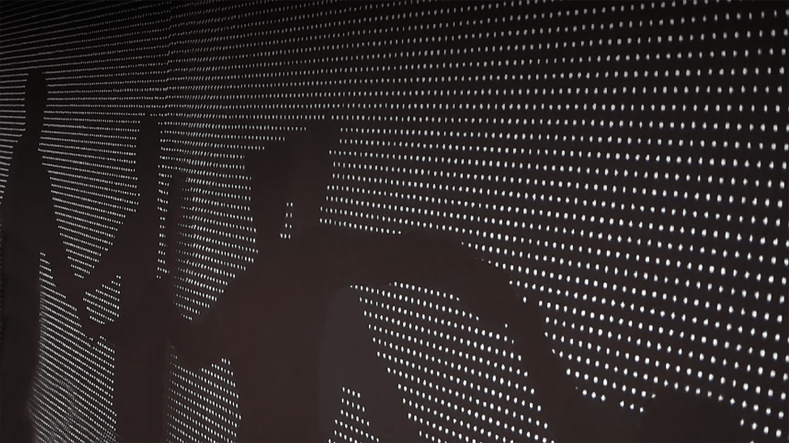
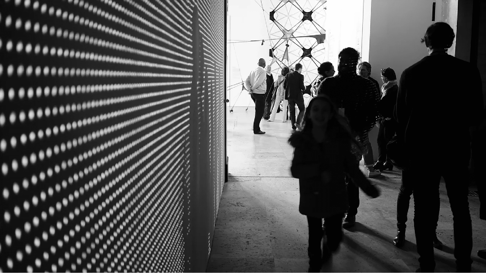

		<!-- OVERALL TEXT COLOR -->
		<div id="style" style= "color:white"> 


	<!-- SECTION 1 -->
		<div class="section" id="auto-height">
				<div id="box">
					<!-- TITLE AND SUBTITLE  -->
					<div class= "text">
						<h2 id="title" style="color:thistle"> Je suis qui je suis</h2>
						<h1> An interactive installation that lets you play with your own shadow </h1>
					</div>
				</div>	
		</div>


	<!-- SECTION 2 -->
		<div class="section">
				<!-- HERO IMAGE -->
					
				</div>


	<!-- SECTION 3 -->
		<div class="section">
				<!-- IMAGE OR VIDEO -->
					<iframe src="https://player.vimeo.com/video/205774595?color=ffffff&title=0&byline=0&portrait=0" frameborder="0" webkitallowfullscreen mozallowfullscreen allowfullscreen></iframe>
		</div>


	<!-- SECTION 4 -->
		<div class="section">
				<!-- IMAGE -->
					
				<!-- PROJECT INFO -->
					<div class= "text">
						<h2> Created in Collaboration with Persiis Hajiyanni and Stefan Iyapah
							</h2>

							<p> Exhibited at the <i>Palais De Tokyo</i> - Paris<br> for the 2016 DO DISTURB! Festival </p>
					</div>
		<footer>		
			<h10> Copyright &copy; - Archer Dilunaire - 2023 </h10>		
		</footer>
					
		</div>
		</div>